Somos una agencia de diseño y gestión de redes sociales para emprendimientos de Chillogallo
Ayudamos a negocios locales a mejorar su imagen, organizar su presencia digital y darse a conocer a través de nuestra plataforma y contenido pensado para redes sociales. Trabajamos con emprendimientos que ofrecen productos o servicios mejorando su presencia digital en internet para atraer más clientes.
Presencia Digital Clara
Reunimos en un solo espacio información importante de cada emprendimiento, como descripción, contacto, imágenes y servicios, para que las personas puedan encontrarlo con más facilidad.
Identidad Representativa
Cada negocio puede mostrarse de una forma más ordenada y coherente, fortaleciendo su imagen con una presentación visual que refleje mejor su trabajo y su valor dentro de Chillogallo.
Visibilidad para Crecer
La plataforma ayuda a que más personas conozcan los emprendimientos locales con eso uso de redes sociales más allá del barrio y generando nuevas oportunidades de contacto, consulta o compra.
Conexión con la comunidad
CHILLOMINKA busca vincular a los negocios con los residentes y visitantes, creando un espacio digital que revaloriza el trabajo de la parroquia y fortalece el consumo local.


Como Unirte
El primer paso es conectar
Contáctanos y coordinaremos una visita para conocer tu emprendimiento y tus necesidades.
Analizamos tu emprendimiento
Entendemos tu emprendimiento, lo que necesita y nosotros lo hacemos realidad.
Diseñamos un plan contigo
Planteamos diferentes rutas con la capacitación, contactos y seguimiento adecuados.
Crecemos y medimos el avance
Celebramos cada logro y seguimos ajustando dicho plan de acuerdo a los resultados.
¿Tienes otra duda? Escríbenos desde la sección de contacto y te respondemos en menos de 48 horas.
Chillominka une dos ideas en una sola palabra: “Chillo” viene de las dos primeras sílabas del nombre de la parroquia Chillogallo, mientras que “minka” proviene del idioma Kichwa ecuatoriano y significa “comunitario” o “comunidad”, haciendo referencia al trabajo colectivo entre varias personas; al juntarlas, Chillominka representa una plataforma comunitaria creada desde Chillogallo y para Chillogallo, donde el trabajo colaborativo de emprendedores y usuarios busca fortalecer la economía local y la identidad de la parroquia.
CCHILLOMINKA es una plataforma web orientada a la promoción y revalorización de los emprendimientos locales de Chillogallo. Su función es reunir en un solo sitio información clara de cada negocio, facilitar que los usuarios los encuentren con mayor facilidad y aportar a una presencia digital más organizada, visible y accesible.
Si tienes un negocio en Chillogallo, puedes contactarte con nosotros y compartir la información básica de tu actividad (nombre, productos o servicios, imágenes y medios de contacto). Con esos datos evaluamos cómo integrar tu emprendimiento en la plataforma y te explicamos los distintos planes de acompañamiento digital disponibles, para que elijas el que mejor se adapte a tus necesidades.
Porque muchos negocios locales no cuentan con una presencia digital bien estructurada, lo que reduce sus posibilidades de ser encontrados por nuevos usuarios. CHILLOMINKA busca responder a esa necesidad ofreciendo un espacio donde cada emprendimiento pueda mostrarse de forma más ordenada, visible y coherente con su identidad.
La plataforma puede incluir diferentes formas de participación según las necesidades de cada emprendimiento. Algunos servicios pueden centrarse en la difusión dentro del sitio web y otros en un acompañamiento más amplio relacionado con identidad visual, contenido o promoción digital, por lo que los costos dependerán del tipo de apoyo que se requiera.
Cada perfil puede incluir información importante como nombre del negocio, descripción, productos o servicios, imágenes, ubicación y medios de contacto. El objetivo es que los usuarios comprendan con facilidad qué ofrece cada emprendimiento y puedan comunicarse con él sin complicaciones..
Chillominka nació para apoyar a los emprendedores de Chillogallo mediante una plataforma web donde sus negocios puedan darse a conocer. Queremos que cada emprendimiento tenga un espacio claro para mostrar lo que ofrece, compartir su información de contacto y llegar a más personas. Valoramos el talento y el esfuerzo de quienes trabajan en la parroquia, por eso buscamos fortalecer el comercio local y que más usuarios descubran los emprendimientos de Chillogallo a través del sitio.

Cuatro principios que impulsan nuestra comunidad
Trabajamos para fortalecer los emprendimientos locales de Chillogallo mediante presencia digital y acompañamiento cercano. Estos principios explican por qué existe la plataforma y para qué la ponemos al servicio de quienes emprenden en la parroquia.
Comunidad
Promovemos el trabajo colectivo entre emprendimientos de Chillogallo, visitando cada negocio para conocer su historia mediante el dialogo directo para llegar a un acuerdo equitativo.
Visibilidad
Damos a cada emprendimiento un espacio concreto para mostrar sus productos, servicios y datos de contacto, ampliando su presencia digital y el alcance hacia nuevos usuarios.
Identidad local
Destacamos las historias y la creatividad de los emprendedores de Chillogallo, para que sus negocios se identifiquen como parte la gente de Chillogallo y no como proyectos anónimos.
Compromiso
Seguimos de cerca el avance de los emprendimientos a traves del sitio web ChilloMinka y la relación con los nuevos usuarios que vayan integrandose.

Citron PC
Especialistas en reparación y mantenimiento de computadoras, laptops e impresoras, con atención profesional y garantía.
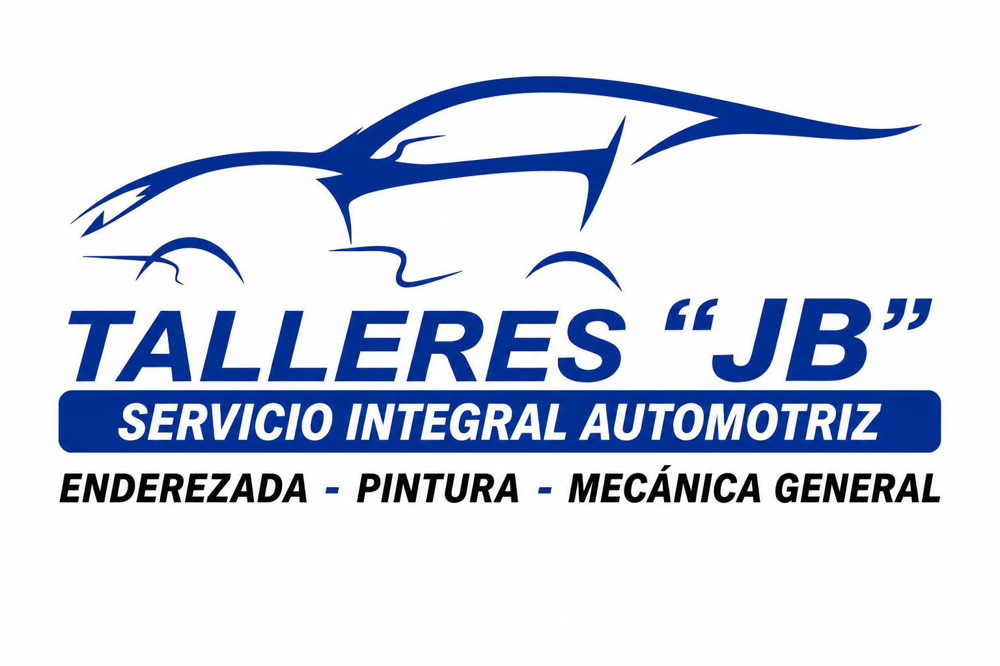
Emprendimiento 2Talleres “JB”
Mecánica, diagnóstico electrónico y mantenimiento de vehículos con garantía y honestidad en Chillogallo.

Papi's Burger
Hamburguesas, platos especiales y pollo broaster. Sabor casero y excelente atención en cada visita.
Citron PC | Servicio Técnico Especializado
Especialistas en reparación y mantenimiento de computadoras, laptops e impresoras, con atención profesional y garantía.
Soluciones técnicas confiables para tus equipos
En Citron PC contamos con más de 12 años de experiencia en reparación y mantenimiento de computadoras, laptops e impresoras. Nos especializamos en brindar diagnósticos precisos, soluciones efectivas y atención personalizada para hogares, estudiantes, emprendedores y empresas.
Reparación especializada
Diagnóstico y reparación de computadoras, laptops e impresoras de todas las marcas.
Mantenimiento técnico
Limpieza, optimización y mantenimiento preventivo para mejorar el rendimiento de tus equipos.
Soporte de hardware y software
Instalación, actualizaciones, formateos y eliminación de fallas para un funcionamiento óptimo.
Repuestos y accesorios
Venta de repuestos, tintas, cargadores, baterías, teclados y suministros de calidad.

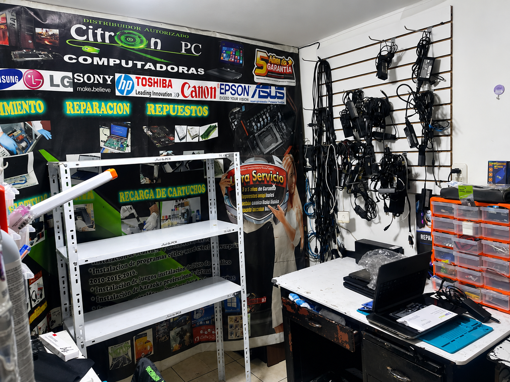


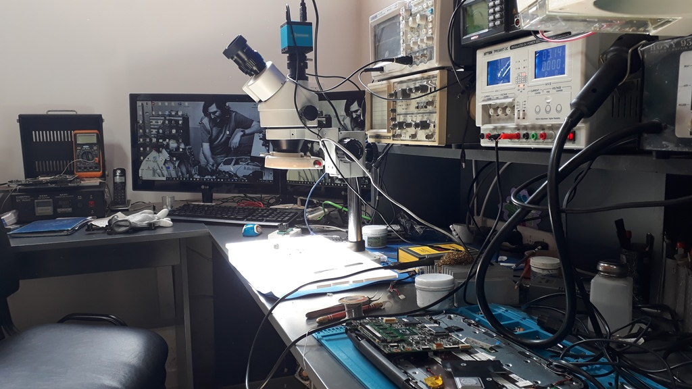
 Ver en 3D
Ver en 3DPasta térmica Thermal Grizzly Kryonaut
Pasta térmica de alto rendimiento para mejorar la disipación del calor.
15$ Ver en 3D
Ver en 3DMemorias RAM para PC y Laptop
Amplía el rendimiento de tu equipo con memorias RAM de calidad.
150$ Ver en 3D
Ver en 3DTinta Epson 544 Original
Impresiones nítidas, colores intensos y mayor protección para cabezales.
$25 Ver en 3D
Ver en 3DMouse Gamer Inalámbrico
Precisión, comodidad y libertad de movimiento para gaming y trabajo.
$30Reparaciones Automotrices
Mecánica, diagnóstico electrónico y mantenimiento de vehículos con garantía y honestidad en Chillogallo.
Tu taller de confianza en Chillogallo
Somos un taller automotriz ubicado en el corazón de la parroquia Chillogallo, con más de cinco años de experiencia en mantenimiento preventivo, reparaciones mecánicas y diagnóstico electrónico de vehículos livianos y de carga.
Aceptamos todo tipo de marcas y modelos: autos, camionetas, SUVs y motos. Cada revisión incluye un informe detallado del estado del vehículo.
Diagnóstico rápido
Scanner electrónico para detectar fallas en minutos y comenzar la reparación sin demoras.
Mecánica general
Frenos, suspensión, embrague, correa de distribución y todo lo que tu vehículo necesita.
Repuestos garantizados
Solo usamos repuestos de marcas certificadas con garantía de fábrica incluida.
Atención personalizada
Te explicamos cada trabajo antes de comenzar y te mostramos los repuestos usados al finalizar.


 Ver en 3D
Ver en 3DPistola de pintura por gravedad HVLP
Pistola de alta eficiencia con depósito superior de aluminio, ideal para aplicar pintura, esmaltes y barnices con un acabado uniforme.
$35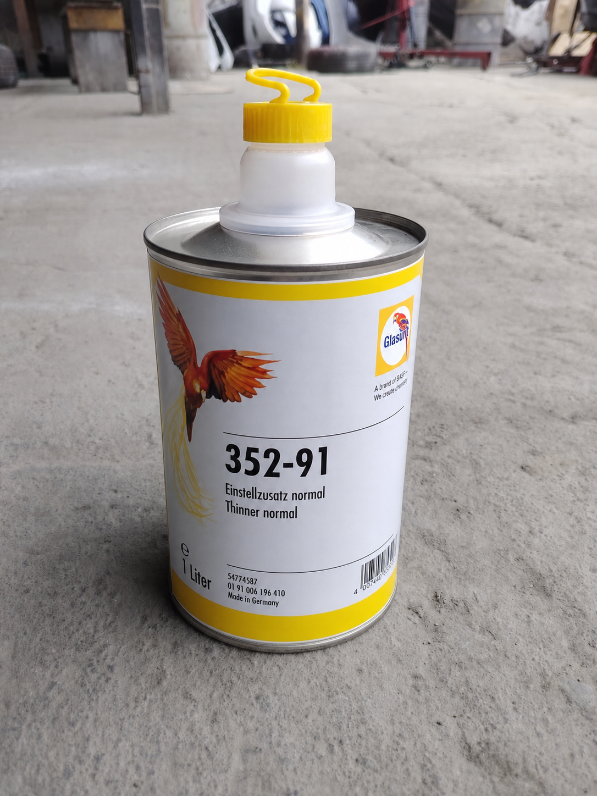
Ver en 3DDisolvente Glasurit 352-91
Diluyente automotriz de 1 litro para ajustar la viscosidad de pinturas y barnices, logrando una aplicación uniforme.
$50 Ver en 3D
Ver en 3DBarniz Acrílico Unidas Titanium U-760B
Barniz acrílico de alto brillo y alta resistencia, ideal para proteger y dar un acabado duradero a pinturas automotrices.
$30 Ver en 3D
Ver en 3DCompresor de aire SILK 100L 3HP
Compresor de aire de 100 litros y 3 HP, ideal para herramientas neumáticas, pintura automotriz y trabajos de taller.
$380Comida Rápida
Hamburguesas, almuerzos del día, salchipapas y jugos naturales. Rico, rápido y a buen precio en Chillogallo.
Sabor casero con la rapidez que necesitas
Somos un local de comida rápida ubicado en Chillogallo, con ingredientes frescos que compramos cada mañana en el mercado local y recetas propias que combinan la tradición ecuatoriana con opciones modernas.
Ingredientes frescos
Compramos en el mercado cada mañana para garantizar frescura y sabor en cada preparación.
Entrega rápida
Pedidos listos en menos de 15 minutos. Delivery en la parroquia sin costo adicional.
Recetas propias
Salsas caseras, panes artesanales y combinaciones que no encontrarás en otro lado.
Menú variado
Hamburguesas, salchipapas, almuerzos del día, jugos naturales y postres caseros.
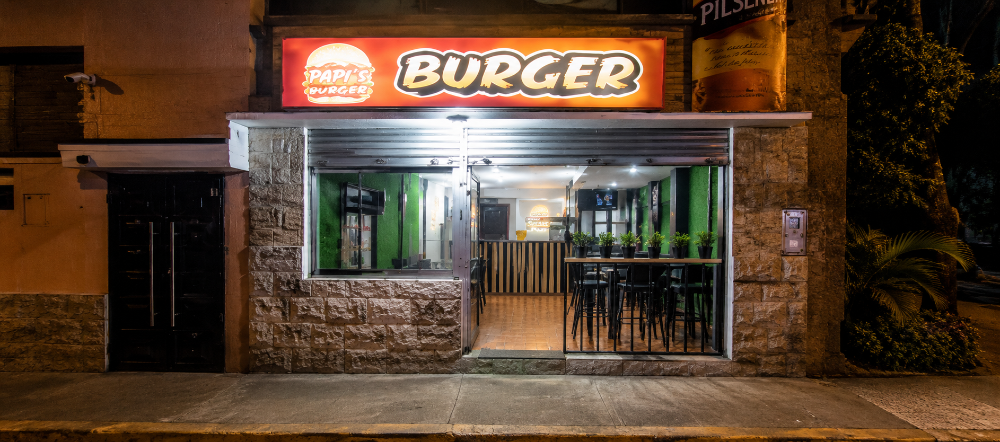
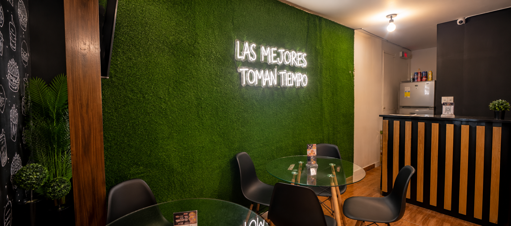


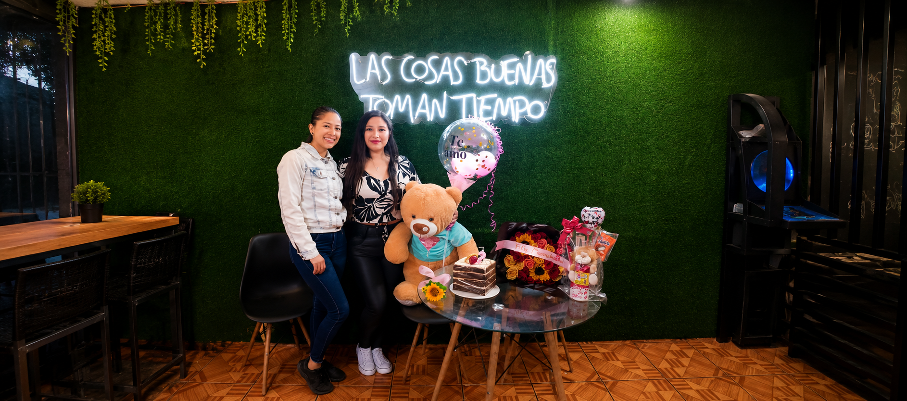
 Ver en 3D
Ver en 3DChuleta de cerdo a la plancha
Jugosa chuleta de cerdo acompañada de arroz, papas fritas, huevo frito, maduro y ensalada fresca.
$5.50Hamburguesa Doble Especial
Hamburguesa con doble carne, queso cheddar, huevo, lechuga y papas fritas.
$3.50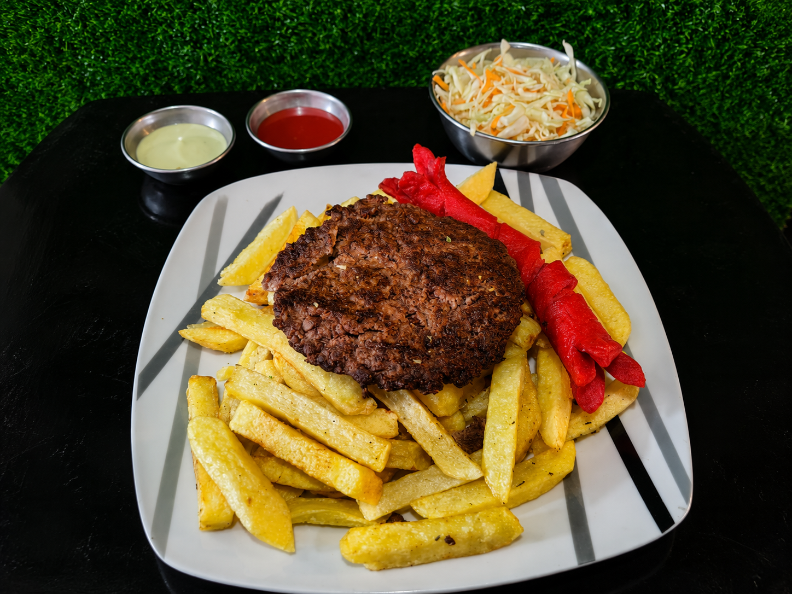
Ver en 3DCarne Frita con Papas
Carne de res frita acompañada de papas fritas, ensalada fresca y salsas.
$3.00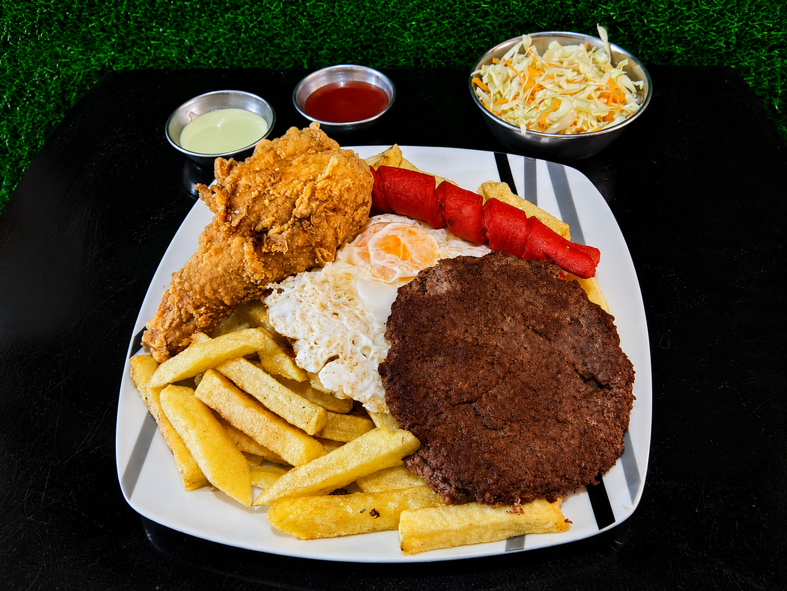
Ver en 3DMixto Especial
Carne frita, pollo broaster y huevo frito acompañados de papas fritas, ensalada fresca y salsas.
$4.50Como Unirte
El primer paso es conectar
Contáctanos y coordinaremos una visita para conocer tu emprendimiento y tus necesidades.
Analizamos tu emprendimiento
Entendemos tu emprendimiento, lo que necesita y nosotros lo hacemos realidad.
Diseñamos un plan contigo
Planteamos diferentes rutas con la capacitación, contactos y seguimiento adecuados.
Crecemos y medimos el avance
Celebramos cada logro y seguimos ajustando dicho plan de acuerdo a los resultados.
Elige tu plan
Impulsa tu emprendimiento con el plan que mejor se adapte a tu negocio en Chillogallo.
Integra tu emprendimiento a la página web CHILLOMINKA y cuenta con un espacio propio dentro del catálogo de negocios del barrio.
- INTRODUCCIÓN
- Inscripción Gratuita
- Creación de Identidad Visual
- REDES SOCIALES
- 2 Redes Sociales a escoger
- 5 Post
- 3 Historias
- PUBLICIDAD PROMOCIONAL
- Impresiones ($20/50unidades)
- 1 Publicidad Digital (Diseño/flyers)
- HONORARIOS
- Obsequio de bienvenida
- REPORTES
- 1 Reporte mensual de Redes Sociales
Aparece en CHILLOMINKA y profesionaliza la identidad de tu emprendimiento con diseño y estrategia visual completa.
- INTRODUCCIÓN
- Inscripción Gratuita
- Creación de Identidad Visual
- REDES SOCIALES
- 3 Redes Sociales a escoger
- 10 Post
- 5 Historias
- PUBLICIDAD PROMOCIONAL
- Impresiones ($50/100unidades)
- 3 Publicidad Digital (Diseño/flyers)
- HONORARIOS
- Obsequio de bienvenida
- REPORTES
- 1 Reporte mensual de Redes Sociales
El acompañamiento completo: presencia web, identidad visual y gestión de tus redes sociales para maximizar tu visibilidad.
- INTRODUCCIÓN
- Inscripción Gratuita
- Creación de Identidad Visual
- REDES SOCIALES
- 5 Redes Sociales a escoger
- 15 Post
- 10 Historias
- PUBLICIDAD PROMOCIONAL
- Impresiones ($75/125unidades)
- Publicidad Digital (Diseño/flyers)
- HONORARIOS
- Obsequio de bienvenida
- REPORTES
- 1 Reporte mensual de Redes Sociales
Chillogallo y la última parada de Sucre antes de la independencia
Lleva 15 años frente al mercado de Chillogallo con su local de bolones de verde. Hoy su negocio sostiene a toda su familia.
Leer más →En mayo de 1822, cuando la independencia del territorio ecuatoriano aún no estaba asegurada, Chillogallo se convirtió en un lugar estratégico para el ejército patriota. Antonio José de Sucre y sus tropas pasaron por este sector del sur de Quito durante los días previos a la Batalla del Pichincha, uno de los acontecimientos más importantes de la historia nacional.
Los soldados descansaron en la zona y se prepararon para el ascenso hacia las laderas del volcán Pichincha. Aquellas jornadas estuvieron llenas de expectativa, pues el resultado del enfrentamiento definiría el futuro de la Real Audiencia de Quito. La tranquilidad de lo que entonces era una zona rural contrastaba con la importancia histórica que estaba a punto de vivir.
Hoy, más de dos siglos después, pocos imaginan que las calles de Chillogallo fueron testigos del paso de quienes participaron en la independencia del Ecuador. Esta conexión histórica convierte a la parroquia en uno de los lugares con mayor valor patrimonial del sur de Quito.

Del garaje al taller: Luis y su pasión por los motores
Con una llave inglesa y mucha determinación, Luis convirtió el garaje de su casa en uno de los talleres más conocidos de Chillogallo.
Leer más →Luis Morales empezó arreglando la moto de su hermano en el garaje de la casa familiar en el barrio Santa Rosa de Chillogallo. No tenía herramientas propias ni clientes: solo tenía ganas de aprender y un vecino que le enseñó los primeros pasos.
Diez años después, su taller ocupa todo el piso bajo de la casa y tiene lista de espera los fines de semana. Luis aprendió a diagnosticar fallas electrónicas con tutoriales y cursos en línea, y hoy es el mecánico de confianza de decenas de familias de la parroquia.
"Chillogallo me dio mis primeros clientes y mis primeros amigos del trabajo", cuenta mientras ajusta un motor. "Aquí uno crece porque la gente te da la oportunidad y tú no la desaprovechas."
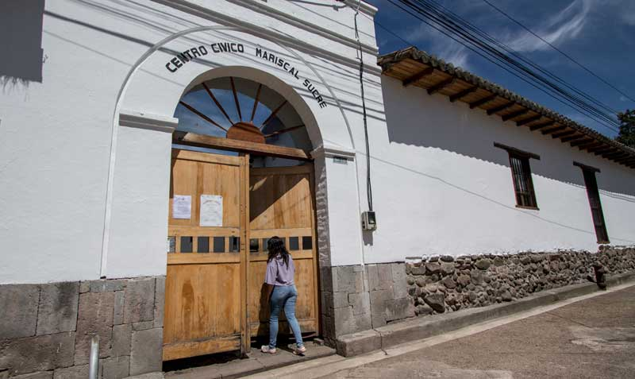
Cuando Chillogallo era conocido como el granero de Quito
Lleva dos décadas enseñando fútbol a niños del sur sin cobrar a quienes no pueden pagar. Su escuela ya tiene jugadores en equipos del país.
Leer más →Mucho antes de convertirse en una de las parroquias más pobladas del sur de la capital, Chillogallo era una extensa zona agrícola. Durante décadas fue conocido como el "granero de Quito" debido a la gran cantidad de haciendas dedicadas a la producción de alimentos que abastecían a la ciudad.
Haciendas como Las Cuadras, Santa Rita, San José y El Carmen formaban parte del paisaje cotidiano. Los caminos eran recorridos por agricultores y comerciantes que transportaban productos hacia los mercados quiteños. La economía local giraba alrededor del trabajo en el campo y de la actividad ganadera.
Con el crecimiento urbano de Quito durante el siglo XX, las haciendas fueron desapareciendo poco a poco para dar paso a barrios, avenidas y nuevos espacios comunitarios. Sin embargo, la historia agrícola de Chillogallo sigue siendo parte fundamental de la identidad de sus habitantes.

El huerto de doña Carmen: verduras frescas en pleno Chillogallo
En 80 metros cuadrados, doña Carmen cultiva tomate, acelga y hierbas para su familia y sus vecinos. Lo llama "el pedacito de campo en la ciudad".
Leer más →Doña Carmen Pillajo llegó a Chillogallo desde Latacunga hace treinta años y nunca pudo dejar de sembrar. En el pequeño patio trasero de su casa armó un huerto urbano con cajones de madera reciclada, tierra abonada con residuos orgánicos y riego por goteo artesanal que ella misma diseñó.
Hoy cultiva más de diez variedades de verduras y hierbas aromáticas. Lo que la familia no consume, lo vende a precio justo a los vecinos del barrio o lo intercambia por otros productos. Varios niños del sector aprenden con ella a conocer las plantas y el ciclo de la tierra.
"La gente en la ciudad cree que necesita mucho espacio para sembrar. Yo les muestro que no. Con ganas y cuidado, hasta en un balcón puedes tener tu huerto", dice doña Carmen mientras riega sus matas de cilantro.

Los jóvenes que pintaron la identidad de Chillogallo
Un colectivo de jóvenes artistas transformó una pared abandonada en un mural de 40 metros que hoy se convirtió en símbolo del barrio.
Leer más →La pared del antiguo galpón en la calle principal de Chillogallo llevaba años con grafitis y avisos pegados encima de avisos. Un grupo de jóvenes del barrio, cansados de verla así, pidió permiso al dueño y en tres fines de semana la transformaron en un mural de cuarenta metros que representa la historia y el presente de la parroquia.
El colectivo se llama "Sur Vivo" y tiene ocho integrantes de entre dieciséis y veinticuatro años. Ninguno estudió arte formalmente: aprendieron mirando tutoriales, asistiendo a talleres gratuitos del municipio y practicando en sus cuadernos durante años. El mural incluye íconos del barrio: la iglesia parroquial, los mercados, los deportistas y las manos de las personas que trabajan.
Desde que el mural apareció, "Sur Vivo" ha recibido solicitudes de otros barrios del sur de Quito. Ellos ponen una condición: que los vecinos participen en el diseño. "Un mural que no le pertenece al barrio no sirve de nada", dice Camila, una de las fundadoras.
Chillogallo estrena parque inclusivo con juegos para niños con discapacidad
La Junta Parroquial inauguró un espacio de recreación en El Beaterio con infraestructura adaptada para niños con distintas capacidades.
Leer más →El sector El Beaterio de la parroquia Chillogallo estrenó un nuevo parque infantil con infraestructura inclusiva: rampas de acceso, columpios adaptados, área de juegos táctiles y pavimento antideslizante en todos los caminos internos. La inversión fue gestionada por la Junta Parroquial junto al Municipio de Quito durante más de un año de trámites y planificación.
La inauguración contó con la presencia de docenas de familias del sector, así como de representantes de la Fundación de Inclusión que participó en el diseño de los espacios. "Queríamos que ningún niño de Chillogallo se quedara fuera del juego por barreras físicas", señaló la presidenta de la Junta Parroquial durante el acto de apertura.
El parque también incluye una zona verde para adultos mayores, bancas con techado para la lluvia y señalética en braille en las áreas principales. Los vecinos del sector, que llevaban años esperando este espacio, organizaron una minga de limpieza antes de la inauguración para tenerlo listo en perfectas condiciones.
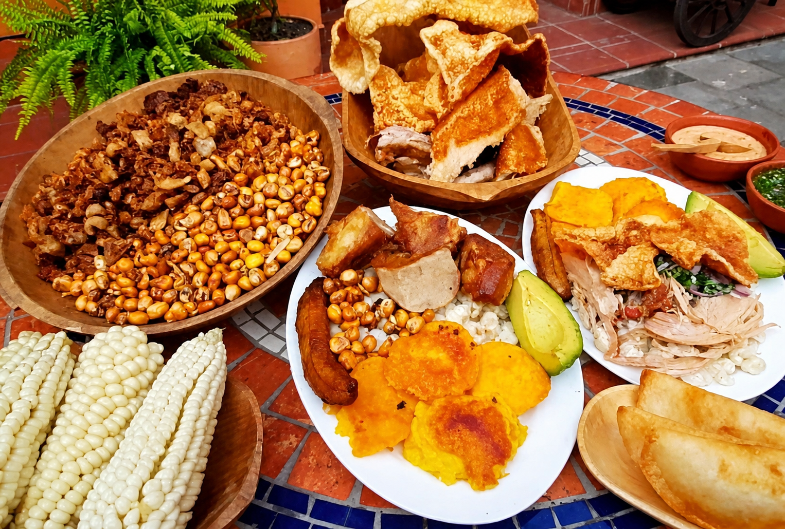
Festival Gastronómico de Chillogallo reúne a más de 60 emprendedores
La plaza central de la parroquia se llenó de sabores y colores durante el primer festival comunitario que reunió a emprendedores locales de toda la zona.
Leer más →La plaza central de Chillogallo se transformó durante un fin de semana en el escenario del primer Festival Gastronómico Comunitario de la parroquia. Más de sesenta emprendedores locales presentaron sus productos: comida típica, bebidas artesanales, postres y platos de fusión preparados con ingredientes del sur de Quito.
El evento, organizado por la Junta Parroquial con el apoyo de la red de emprendimientos Chillominka, atrajo a visitantes de barrios vecinos y del norte de la ciudad. Los asistentes pudieron degustar desde bolones y seco de pollo hasta tortillas de maíz y chicha de jora, además de productos elaborados por los talleres de la comunidad.
Los emprendedores que participaron reportaron ventas superiores a lo esperado y varios cerraron acuerdos de distribución con tiendas y restaurantes de otros sectores de Quito. La Junta Parroquial ya confirmó que el festival tendrá edición anual, con más espacio y más participantes.

Minga comunitaria recupera el parque lineal de La Ecuatoriana
Más de 150 vecinos de Chillogallo participaron en la limpieza, pintura y reforestación del parque lineal del sector La Ecuatoriana.
Leer más →Con palas, rastrillos, pintura y plántulas en mano, más de ciento cincuenta vecinas y vecinos del sector La Ecuatoriana de Chillogallo se reunieron un sábado para recuperar el parque lineal que bordea la quebrada del barrio. El espacio, que llevaba meses con basura acumulada y zonas deterioradas, quedó completamente renovado tras una jornada de trabajo comunitario de ocho horas.
La minga fue convocada por el comité barrial con apoyo de la Junta Parroquial, que proporcionó herramientas, pintura y las cincuenta plantas nativas utilizadas para reforestar el área verde. Familias enteras, incluidos niños y adultos mayores, participaron en las distintas tareas según sus posibilidades.
"Cuando la gente trabaja junta por su barrio, el resultado no es solo un parque limpio: es un barrio que se quiere a sí mismo", dijo uno de los organizadores de la minga. Los vecinos acordaron realizar una minga de mantenimiento cada tres meses para mantener el espacio en buen estado.

Junta Parroquial lanza programa gratuito de capacitación en oficios técnicos
Electricidad, plomería, carpintería y costura son los primeros talleres que ofrece la Junta Parroquial de Chillogallo de forma completamente gratuita.
Leer más →La Junta Parroquial de Chillogallo puso en marcha un programa de capacitación técnica gratuita abierto a todos los residentes de la parroquia mayores de dieciséis años. En la primera fase, los talleres ofrecidos son electricidad residencial, plomería básica, carpintería y costura y confección, con grupos de hasta veinte personas y clases los fines de semana.
Los instructores son técnicos calificados que viven en la propia parroquia, contratados por la Junta con fondos del presupuesto participativo de la comunidad. Al final de cada taller, los participantes reciben un certificado avalado por una institución de educación técnica de Quito y acceso a la bolsa de trabajo local coordinada por Chillominka.
Las inscripciones se completaron en menos de 48 horas para los primeros grupos, lo que evidenció la alta demanda. La Junta ya gestiona ampliar el programa con nuevos talleres de gastronomía, administración básica y manejo de herramientas digitales para el siguiente trimestre.

Chillogallo inaugura su primera biblioteca comunitaria impulsada por vecinos
Con más de 800 libros donados por la propia comunidad, el nuevo espacio cultural abre sus puertas para promover la lectura y el aprendizaje en la parroquia.
Leer más →La primera biblioteca comunitaria de Chillogallo abrió sus puertas en un local rehabilitado por los propios vecinos en el centro parroquial. El espacio alberga más de ochocientos libros donados por familias de la parroquia, organismos culturales de Quito y la red de casas de cultura del Municipio. La iniciativa surgió de un grupo de madres de familia preocupadas porque sus hijos no tenían un espacio tranquilo y cercano para estudiar y leer.
La biblioteca funciona de lunes a sábado, con horario extendido los días de escuela para que los niños puedan usarla después de clases. Además de libros, cuenta con dos computadoras con acceso a internet para investigación, un rincón de lectura infantil y una sala multiusos donde se realizarán talleres y clubes de lectura.
Los vecinos que organizaron el proyecto cuentan que lo más emocionante fue ver cómo la comunidad respondió a la convocatoria de donación de libros: en tres días llegaron más volúmenes de los que esperaban en un mes. "Chillogallo tiene cultura y tiene ganas de aprender. Solo necesitaba un espacio propio", dijeron los organizadores en la inauguración.
Chillogallo: Quiz Sur de Quito
Pon a prueba tus conocimientos sobre la parroquia de Chillogallo respondiendo preguntas de opción múltiple sobre su historia, lugares emblemáticos, comunidad y cultura.
Descubre Chillogallo
Adivina palabras relacionadas con la historia, cultura, lugares representativos y comunidad de Chillogallo. ¡Completa la ruleta y demuestra cuánto sabes!
Chillogallo en 10 frases
Reordena las letras para formar palabras clave relacionadas con Chillogallo y aprende de manera divertida sobre su identidad, comunidad y espacios representativos.
Chillogallo: Lugares y Comunidad
Relaciona correctamente los lugares, conceptos y elementos más importantes de Chillogallo para reforzar tus conocimientos sobre la parroquia.
Sopa de letras de Chillogallo
Encuentra las palabras ocultas relacionadas con la historia, cultura, comunidad y lugares emblemáticos de Chillogallo en esta entretenida sopa de letras.
Contacto
¿Tienes un negocio en Chillogallo y quieres crecer? ¿Eres un aliado que quiere apoyar el desarrollo local? ¿O simplemente quieres conocer más sobre lo que hacemos? Escríbenos y te respondemos en menos de 48 horas.